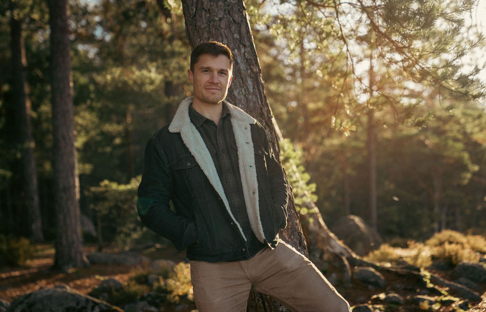
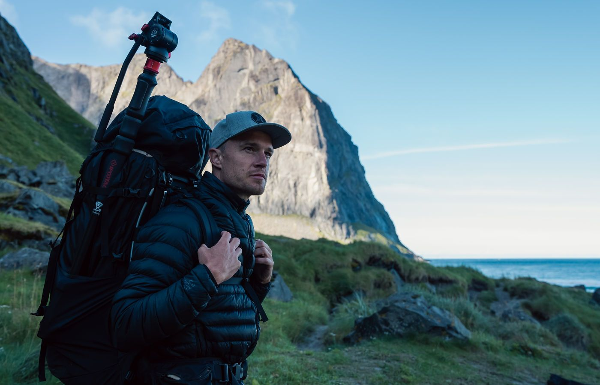
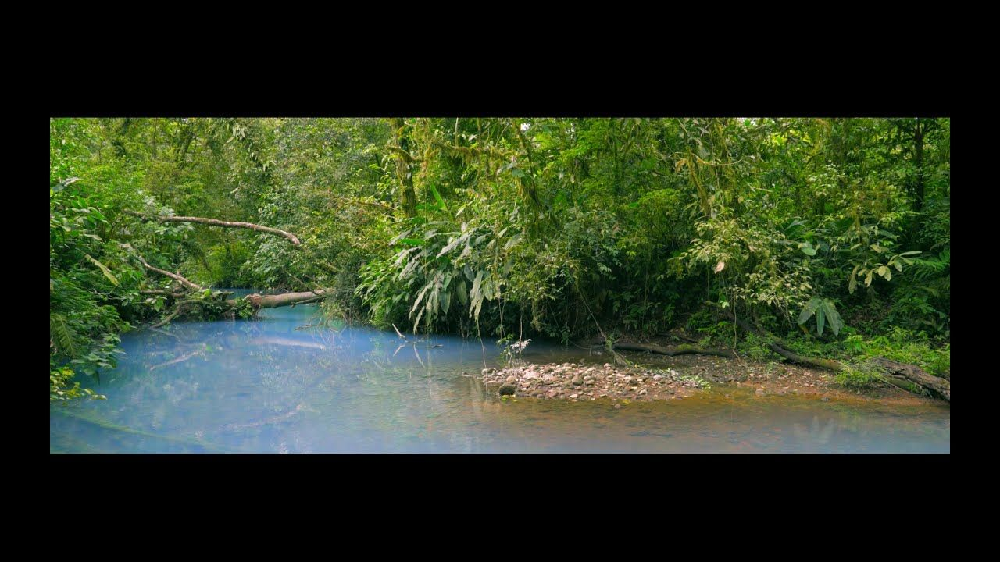
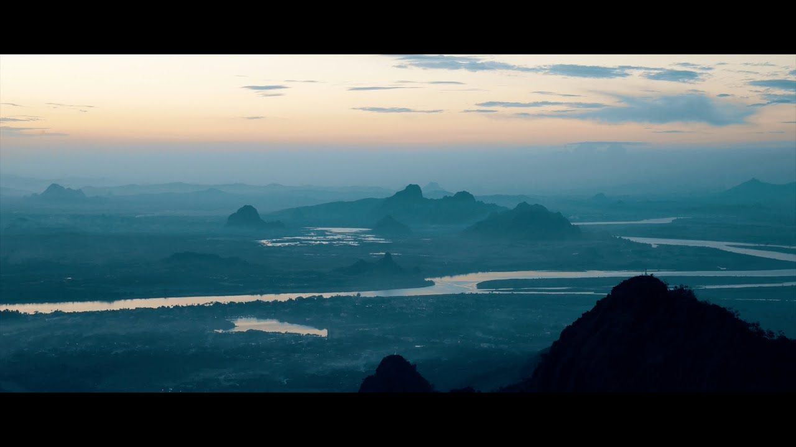

Biologist, cinematographer, storyteller — I go where the story is.
Since 2017 I've worked hand-in-hand with conservation groups, national parks, NGOs and researchers to make films that do more than look beautiful — films built to advance a real conservation goal.
From the savannahs of Akagera to the forests of Myanmar and the rivers of the Amazon, the work is the same: earn the trust of the people and the place, wait for the moment, and bring back a story that makes protecting nature feel not like a duty, but a privilege.
I also make environmental films for lodges and hotels, license footage, and run filmmaking trainings for the next generation of conservation storytellers.



